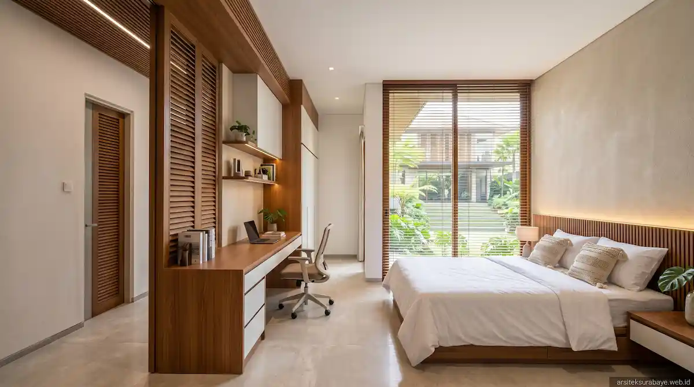

Desain rumah kos eksklusif adalah perancangan bangunan hunian sewa yang mengutamakan kenyamanan penghuni, efisiensi ruang, dan kemudahan perawatan, sehingga kamar mudah disewakan dan bangunan tahan lama di iklim panas-lembap Surabaya.
Kos yang laris umumnya ditentukan oleh lokasi, kenyamanan kamar, dan keamanan, bukan hanya jumlah kamar. Kawasan sekitar kampus dan pusat kerja di Surabaya biasanya ramai peminat, tetapi tetap perlu riset lapangan.
1. Apa yang Membedakan Desain Rumah Kos Eksklusif dari Rumah Tinggal Biasa?
Rumah tinggal dirancang untuk satu keluarga, sedangkan rumah kos melayani banyak penghuni dengan kebutuhan privasi masing-masing. Karena itu, arsitek harus memikirkan sirkulasi penghuni, pemisahan area privat dan bersama, serta keamanan akses sejak tahap denah.
Pada kos eksklusif, nilai tambah biasanya datang dari kualitas ruang: kamar terang, udara mengalir, kamar mandi bersih, dan tampilan bangunan yang rapi. Hal-hal ini membantu kamar cepat terisi dan bertahan di harga sewa yang wajar.
2. Di Mana Lokasi Strategis Rumah Kos di Surabaya?
Lokasi menentukan siapa calon penghuni Anda. Beberapa kawasan yang umumnya menarik peminat kos di Surabaya antara lain:
- Keputih, Gebang, dan Sukolilo: Dekat dengan ITS dan kampus lain di Surabaya Timur.
- Mulyorejo: Dekat dengan Kampus C Universitas Airlangga.
- Siwalankerto, Wonocolo, dan Tenggilis: Dekat dengan Universitas Kristen Petra dan Ubaya.
- Surabaya Pusat dan Barat: Lebih cocok untuk kos karyawan dan pekerja kantoran.
Sebelum membeli atau membangun, cek kondisi lapangan: lebar jalan, potensi genangan, ketersediaan parkir, serta jarak ke pusat makan dan transportasi. Untuk wilayah rawan genangan, baca juga pertimbangan teknis pada artikel strategi desain rumah bebas banjir dan genangan di Surabaya.
3. Elemen Desain Apa yang Membuat Kamar Kos Nyaman dan Mudah Disewakan?
Kenyamanan penghuni bisa dirancang dengan beberapa elemen berikut:
- Ventilasi silang dan bukaan cukup: Agar kamar tidak pengap. Prinsipnya dibahas di artikel solusi ventilasi silang rumah sejuk di Surabaya.
- Kamar mandi dalam: Dilengkapi sirkulasi udara yang baik dan lantai anti-selip.
- Instalasi listrik dan air tertata: Termasuk penyiapan meteran atau sub-meter bila diperlukan.
- Area bersama: Seperti dapur bersama, ruang jemur, dan ruang santai dengan ukuran proporsional.
- Keamanan terkontrol: Berupa satu akses utama (single gate), pencahayaan jalur, dan titik CCTV.
- Parkir motor memadai: Menjadi pertimbangan utama calon penghuni di kota besar.
- Pengurang panas: Penggunaan insulasi atap dan overstek yang memadai.

4. Bagaimana Perbedaan Tipe Kamar Kos Standar, Menengah, dan Eksklusif?
Tabel berikut adalah gambaran umum. Angkanya merupakan contoh dan perlu disesuaikan dengan luas lahan serta target pasar Anda:
| Aspek | Standar | Menengah | Eksklusif |
|---|---|---|---|
| Ukuran kamar | Sekitar 3x3 m | Sekitar 3x4 m | Lebih luas dari 3x4 m |
| Kamar mandi | Sering bersama | Dalam, ukuran ringkas | Dalam, lebih lega |
| Fasilita bersama | Dasar | Dapur dan ruang jemur | Dapur, ruang santai, area kerja |
| Target penghuni | Mahasiswa budget terbatas | Mahasiswa & karyawan muda | Profesional & mahasiswa pascasarjana |

5. Bagaimana Merencanakan Anggaran dan Efisiensi Bangunan?
Rumah kos sangat cocok dirancang menggunakan modul kamar yang berulang. Dengan ukuran kamar dan posisi kamar mandi yang seragam, jalur perpipaan (plumbing) dapat disatukan, struktur lebih sederhana, dan pengerjaan konstruksi jauh lebih cepat.
Jika lahan terbatas, pembangunan bertingkat dengan penempatan tangga efisien dapat mengoptimalkan jumlah kamar. Setelah konsep disetujui, susun Rencana Anggaran Biaya (RAB). Panduannya ada di artikel cara menghitung estimasi biaya arsitek dan RAB serta pentingnya gambar kerja (DED) sebelum membangun.
6. Bagaimana dengan Perizinan Rumah Kos?
Bangunan kos tetap memerlukan Persetujuan Bangunan Gedung (PBG) dan kesesuaian peruntukan lahan dengan tata ruang kota. Ketentuan teknis dan administrasi dapat berbeda di tiap lokasi, jadi konfirmasikan kepada dinas terkait atau minta arsitek mendampingi Anda. Gambaran prosesnya tersedia di artikel peran arsitek dalam pengurusan PBG/IMB.
7. Kesalahan Umum saat Membangun Rumah Kos
- Menambah kamar berlebihan: Menyebabkan sirkulasi udara dan cahaya alami terabaikan sehingga kamar terasa pengap.
- Abaikan sirkulasi & parkir: Kurangnya area parkir mengganggu kenyamanan penghuni dan tetangga sekitar.
- Material tidak ramah perawatan: Memakai bahan murah tanpa memikirkan kelembapan tinggi Surabaya yang cepat merusak dinding dan plafon.
- Melewatkan DED dan RAB: Menyebabkan pembengkakan biaya yang sulit dikontrol saat pembangunan.
- Tanpa rencana tata ruang masa depan: Tidak menyisakan ruang struktur jika ingin menambah lantai di kemudian hari.
8. Pertanyaan Umum (FAQ)
Apa itu rumah kos eksklusif?
Rumah kos eksklusif adalah hunian sewa yang dirancang lebih nyaman dari kos biasa, umumnya dengan kamar mandi dalam, ventilasi dan cahaya alami yang baik, area bersama yang tertata, serta keamanan yang terkontrol.
Berapa ukuran kamar kos yang ideal?
Tidak ada angka tunggal. Ukuran kamar umumnya berkisar dari sekitar 3x3 meter untuk tipe standar hingga lebih luas untuk tipe eksklusif, menyesuaikan target penghuni dan anggaran. Arsitek membantu menentukan modul kamar yang efisien.
Apakah kos perlu kamar mandi dalam?
Tidak wajib, tetapi kamar mandi dalam umumnya menjadi nilai jual utama pada kos kelas menengah ke atas. Pilihan ini memengaruhi biaya bangun dan tarif sewa, sehingga perlu dihitung sejak tahap desain.
Apakah membangun rumah kos perlu izin khusus?
Bangunan tetap perlu Persetujuan Bangunan Gedung (PBG), dan peruntukan lahan perlu sesuai tata ruang. Ketentuan dapat berbeda di tiap lokasi, jadi konfirmasikan ke dinas terkait atau konsultan arsitek Anda.
Berapa lama proses desain rumah kos?
Lamanya bergantung pada luas lahan dan jumlah kamar. Tahapan umumnya meliputi konsep, denah, desain fasad, gambar kerja, dan perhitungan RAB. Jadwal pastinya disepakati saat konsultasi awal.
Apakah arsitek bisa membantu menghitung kelayakan investasi kos?
Arsitek membantu sisi desain dan estimasi biaya bangun (RAB). Untuk analisis tarif sewa dan balik modal, sebaiknya dipadukan dengan riset pasar lokal atau konsultan keuangan.